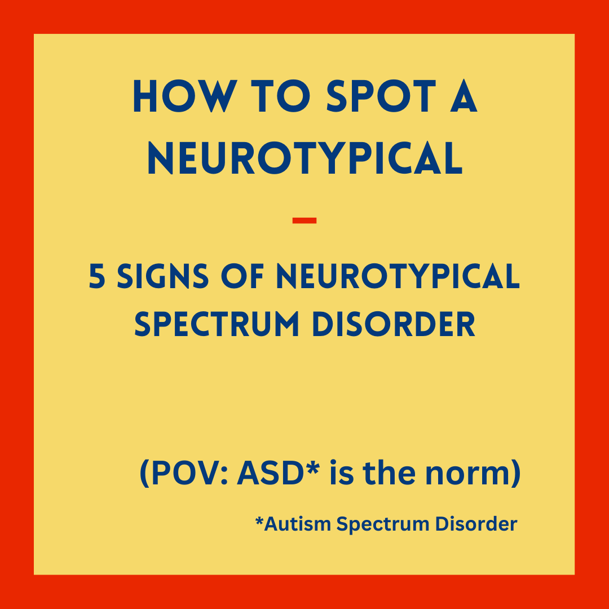
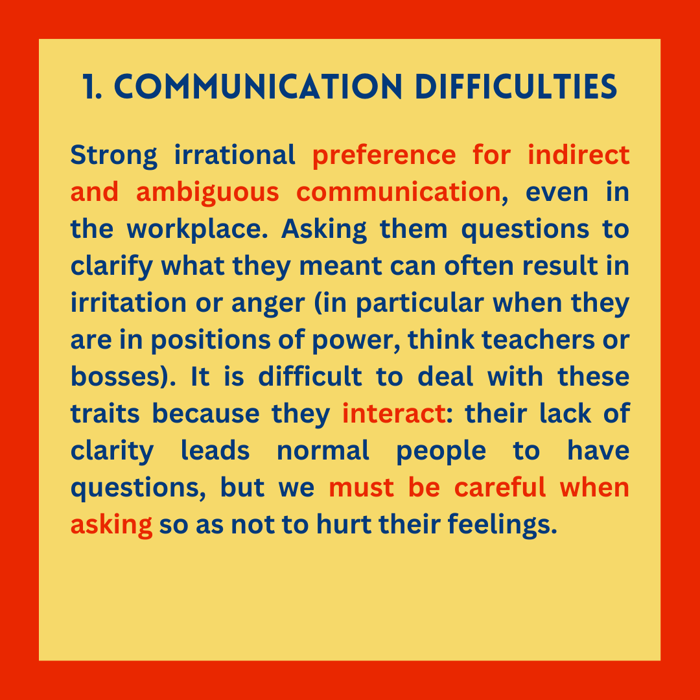
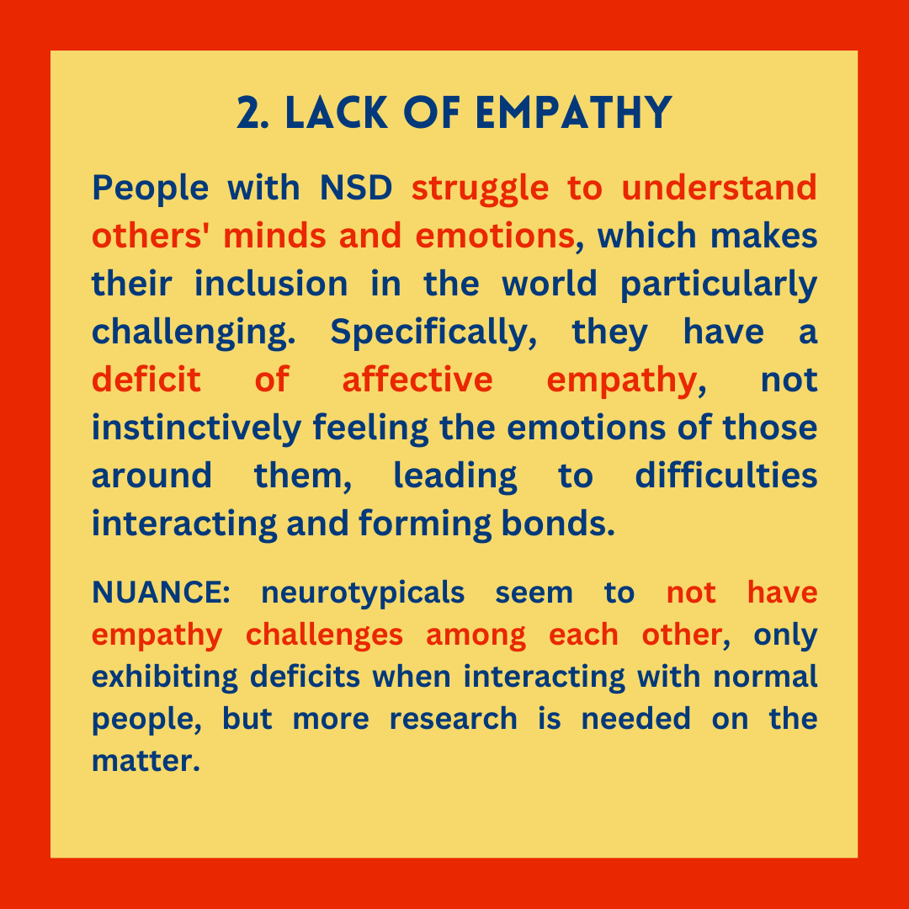
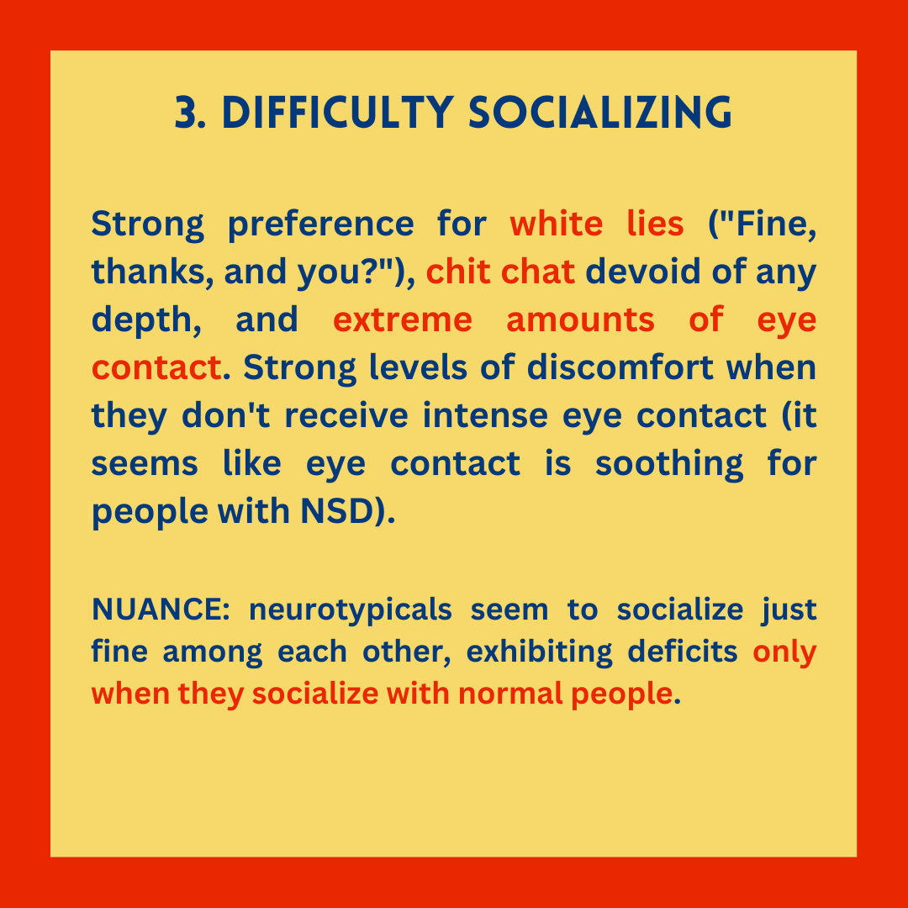
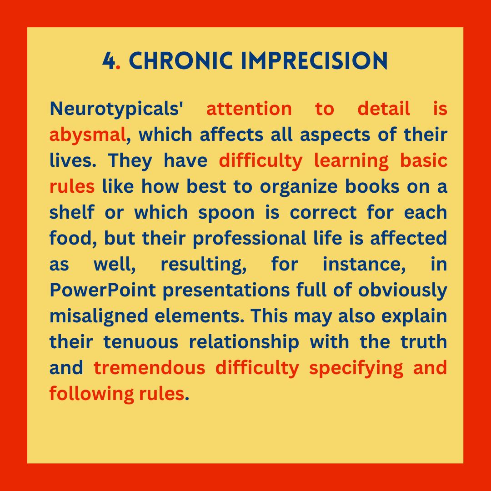
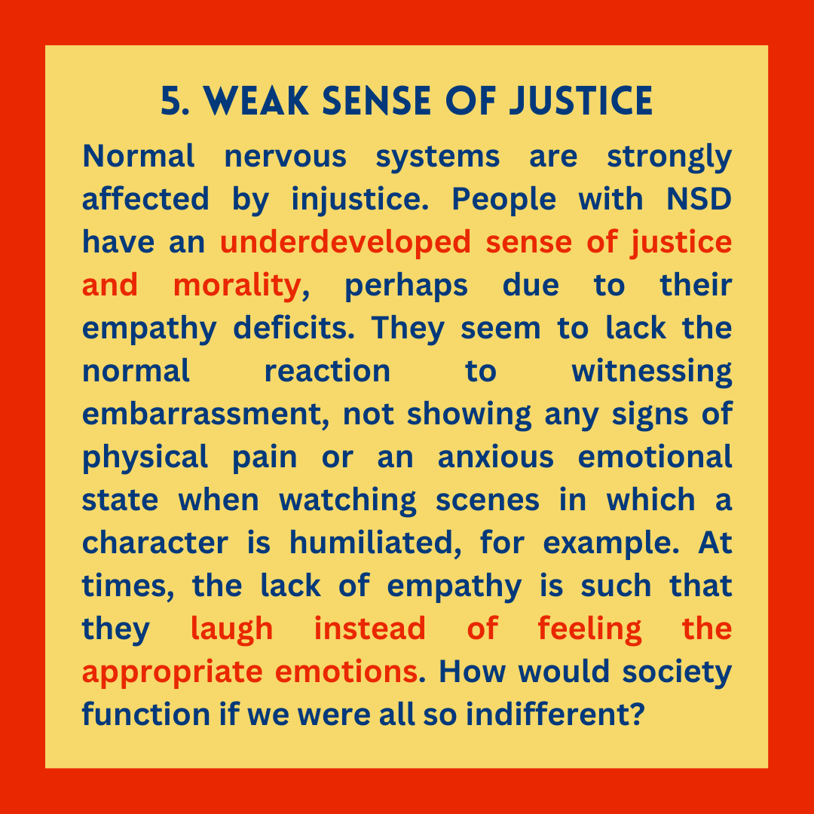
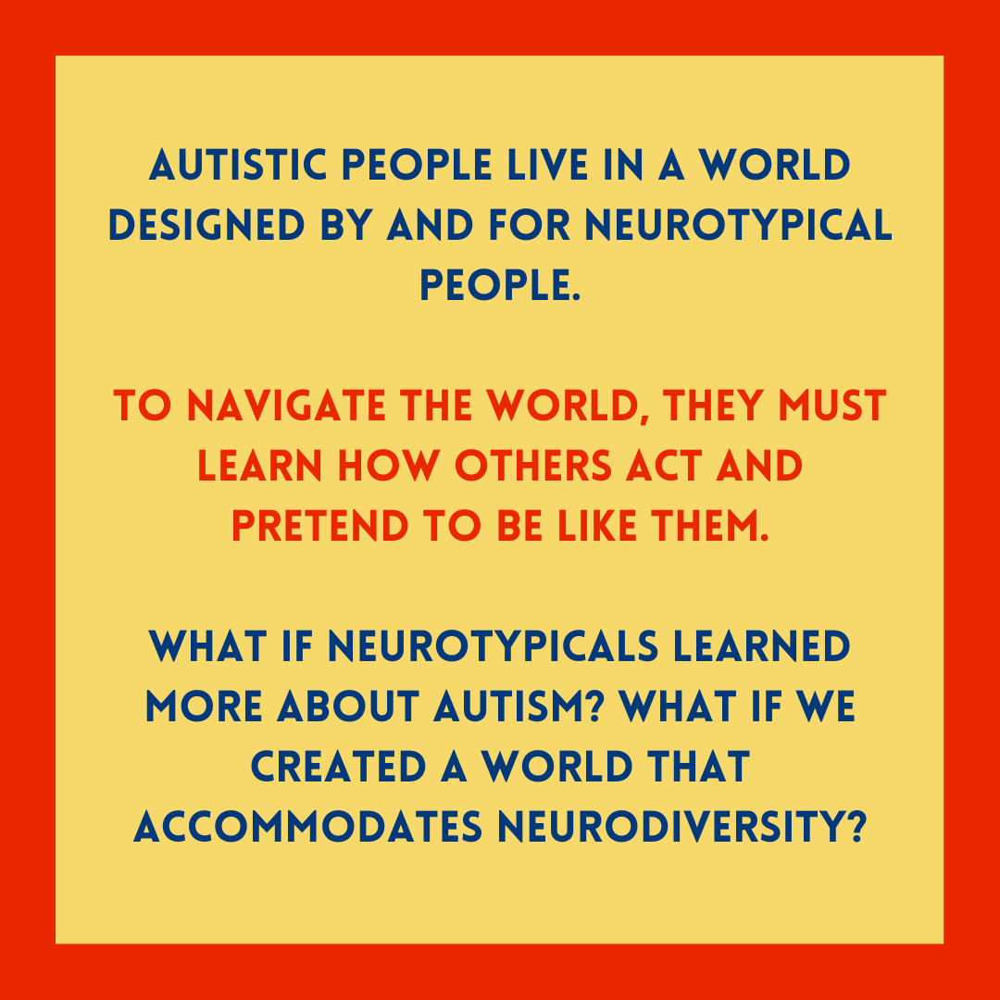

This post is an adaptation / archive of something I first wrote for Instagram (link to original post). The images are reposted in order with respective image descriptions.
More on the topic “What if neurodivergence was the norm?” Let’s subvert how we tend to think about Autism! If 95% of people were Autistic, how would we describe those with “Neurotypical Spectrum Disorder”?
Content highly inspired by the work of @myfavouritejo on TikTok (also on Instagram @myfavouritejo).

How to spot a neurotypical
5 signs of Neurotypical Spectrum Disorder
(POV: ASD* is the norm)
*Autism Spectrum Disorder

1. Communication difficulties
Strong irrational preference for indirect and ambiguous communication, even in the workplace. Asking them questions to clarify what they meant can often result in irritation or anger (in particular when they are in positions of power, think teachers or bosses). It is difficult to deal with these traits because they interact: their lack of clarity leads normal people to have questions, but we must be careful when asking so as not to hurt their feelings.

2. Lack of empathy
People with NSD struggle to understand others’ minds and emotions, which makes their inclusion in the world particularly challenging. Specifically, they have a deficit of affective empathy, not instinctively feeling the emotions of those around them, leading to difficulties interacting and forming bonds.
NUANCE: neurotypicals seem to not have empathy challenges among each other, only exhibiting deficits when interacting with normal people, but more research is needed on the matter.

3. Difficulty socializing
Strong preference for white lies (“Fine, thanks, and you?”), chit chat devoid of any depth, and extreme amounts of eye contact. Strong levels of discomfort when they don’t receive intense eye contact (it seems like eye contact is soothing for people with NSD).
NUANCE: neurotypicals seem to socialize just fine among each other, exhibiting deficits only when they socialize with normal people.

4. Chronic imprecision
Neurotypicals’ attention to detail is abysmal, which affects all aspects of their lives. They have difficulty learning basic rules like how best to organize books on a shelf or which spoon is correct for each food, but their professional life is affected as well, resulting, for instance, in PowerPoint presentations full of obviously misaligned elements. This may also explain their tenuous relationship with the truth and tremendous difficulty specifying and following rules.

5. Weak sense of justice
Normal nervous systems are strongly affected by injustice. People with NSD have an underdeveloped sense of justice and morality, perhaps due to their empathy deficits. They seem to lack the normal reaction to witnessing embarrassment, not showing any signs of physical pain or an anxious emotional state when watching scenes in which a character is humiliated, for example. At times, the lack of empathy is such that they laugh instead of feeling the appropriate emotions. How would society function if we were all so indifferent?

Autistic people live in a world designed by and for neurotypical people.
To navigate the world, they must learn how others act and pretend to be like them.
What if neurotypicals learned more about autism? What if we created a world that accommodates neurodiversity?
Color palette inspired by Pedro Almodóvar’s “Women on the Verge of a Nervous Breakdown”.
Reuse
Citation
BibTeX citation:
@online{brazão2023,
author = {Vasco Brazão},
title = {What If {Autism} Was the Norm?},
date = {2023-02-25},
langid = {en}
}
For attribution, please cite this work as:
Vasco Brazão. 2023. “What If Autism Was the Norm?” February
25, 2023.